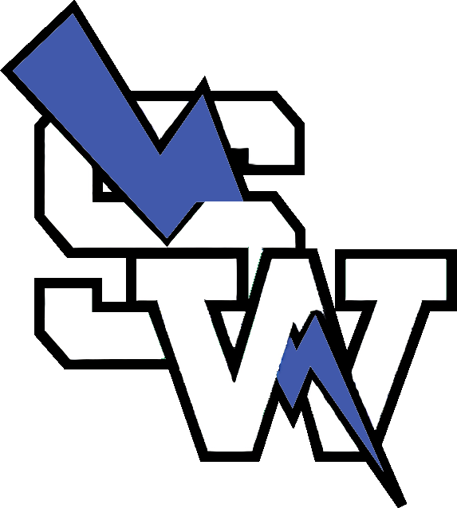

Game-Day How-To for Stat Keepers
Two JV players keep stats during varsity games using two team iPads. One tracks offense, the other tracks defense. Everything syncs live so Coach can see all the stats in real time on a third device.
One of you (doesn't matter which) starts the game. You only need to do this on one iPad — the other iPad will see it automatically.
Opponent
Active Players
After starting (or joining) a game, you'll see the role picker. Each of you taps your assigned role.
vs Lincoln
You're tracking every shot, free throw, assist, and turnover.
Tap the player's name tab at the top. The selected player is highlighted blue.
Tap on the court where the shot was taken. A popup will ask: Made or Missed? Tap one. The app automatically knows if it's a 2 or a 3 based on where you tapped.
Tap FT ✓ for a make, FT X for a miss.
Tap AST when the selected player gets an assist. Tap TO for a turnover.
Tap Q1, Q2, Q3, Q4 (or OT) at the top right to switch quarters.
You're tracking rebounds, steals, blocks, fouls, and hustle plays.
Tap the player's name tab at the top.
When something happens, tap the right button: REB (rebound), STL (steal), BLK (block), or FOUL (personal foul).
Tap ⚡ HUSTLE PLAY for charges taken, deflections, loose balls, or any other hustle plays. Pick the type from the popup.
Stay focused on your job — offense or defense. Don't worry about the other side; your partner has it. Everything syncs automatically.
When a different player makes a play, tap their name tab first, then record the stat. This is the most important habit to build.
When a new quarter starts, tap the correct quarter button (Q1, Q2, Q3, Q4) at the top right. Both iPads have this.
The Coach view has an "Opp Score" button at the bottom. Coach (or one of you) taps it and enters the opponent's score for each quarter.
Either iPad can end the game. Tap the red End Game button at the bottom of your screen. Confirm when it asks.
After ending, tap the REPORT tab at the top. You'll see the full game summary with stat leaders, team highlights, and hustle plays.
Stats are saved automatically. Close the app — everything is stored in the cloud and won't be lost.
| Tap on court | Record a shot (made or missed) |
| FT ✓ | Free throw made |
| FT X | Free throw missed |
| AST | Assist |
| TO | Turnover |
| REB | Rebound |
| STL | Steal |
| BLK | Block |
| FOUL | Personal foul |
| ⚡ HUSTLE PLAY | Charges, deflections, loose balls, dives |
| UNDO | Remove the last stat you recorded |
| Box Score | View the full live box score |
| End Game | Finish and save the game |
| Q1–Q4 / OT | Switch to the current quarter |